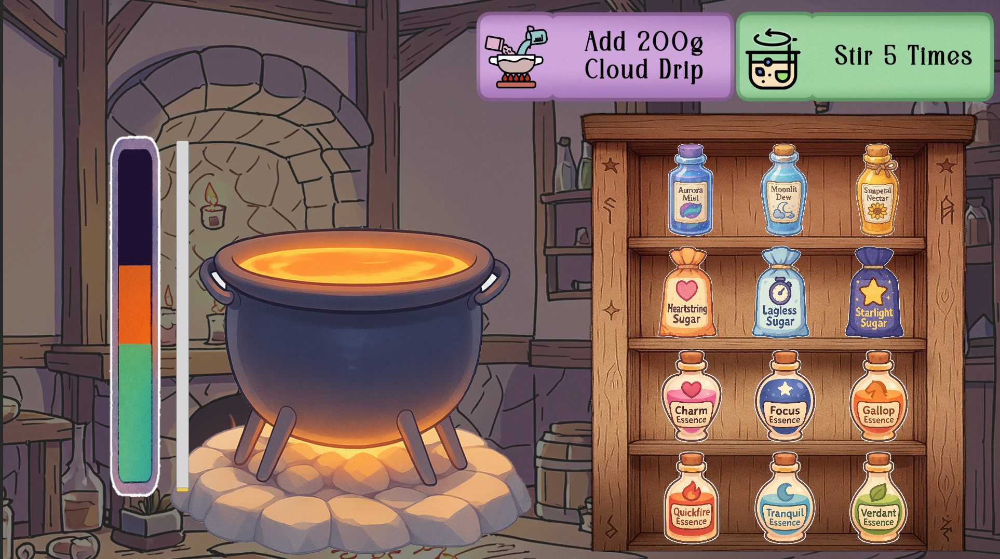

Project link: Wizard Candy Maker프로젝트 링크: Wizard Candy Maker

- As the lead designer and Unity C# programmer on a two-person team, I designed and implemented the complete gameplay loop.2인 개발 팀에서 핵심 기획자 & Unity C# 프로그래머로 참여하여 전체 게임 플레이 루프를 설계 및 구현
- Designed the core systems—including magical recipes, candy-making minigames, and customer orders and waiting—and iterated from prototypes through balancing.마법 레시피, 캔디 제작 미니게임, 손님 주문/대기 시스템 등 핵심 시스템 전반을 직접 기획하고 프로토타입–밸런싱까지 반복 개선
- Reinforced the “wizard confectioner” concept through effects, animation timing, and sound triggers tailored to the available art and audio assets.“마법사 제과사”라는 콘셉트를 살리기 위해 아트·사운드 리소스를 고려한 연출(이펙트, 애니메이션 타이밍, 사운드 트리거링)을 적용
Genre: #TimeManagement #Management #Puzzle #Minigames #Casual #Halloween장르: #타임매니지먼트 #경영 #퍼즐 #미니게임 #캐주얼 #할로윈테마
Game overview:간단 게임 소개:
On Halloween night, you become a wizard confectioner running a magical candy workshop.플레이어는 할로윈 밤, 마법사이자 제과사가 되어 마법 캔디 공방을 운영하는 주인공이 됩니다.
Your goal is to understand each customer’s wishes and make exactly the right candy.손님들의 욕망을 파악하고, 이에 맞는 캔디를 정확하게 만들어 내는 것이 목표입니다.
Make candy through minigames that involve mixing and boiling magical ingredients according to a recipe.마법 재료를 정해진 레시피에 맞춰 섞고 끓이는 미니게임을 통해 캔디를 제작합니다.